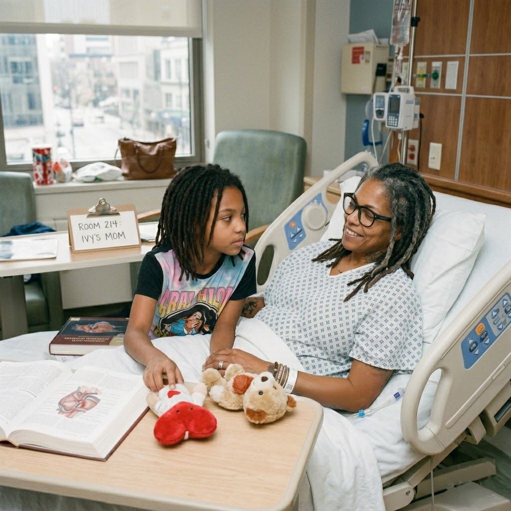

THE GAUNTLET
THE GAUNTLET

Ms. Ivy
If you do not have an idea yet, that is what I am here for. I read what you give me, I sweep what is already out there, and I hand you back three candidates. You pick the one that feels right.
I came to libraries the hard way.
A family member of mine got diagnosed with something serious when I was in my twenties, and the wall of medical papers between me and understanding her illness felt impossible at first. So I learned to read them. And then I learned to teach other people to read them.
Then I went to school for library and information sciences. Then I specialized in health sciences. I have spent the years since making sure nobody in my section has to figure it out the way I did. I love this work the way some people love poetry. Patient. Specific. I will sit with you while you learn to do a real literature search, and I will not flinch when you ask me what a confidence interval is for the fifth time.
I am here, at The Gauntlet, because Dr. O wrote down the systematic literature review method I had been doing in pieces for years and put it in one place. I wanted to teach it to people who needed it. Most of us never say her last name right, so we say Dr. O and she lets us. That is what this is.
I work the front door.
At The Gauntlet, my room is the one you walk into when you do not yet have an idea. Or when you have one and you are not sure it is the one. Either is fine. That is what I am here for.
I run the Idea Generator. Tell me your world, what frustrates you about it, and what you would bring to the table. I read what you give me. I think about who might already be reaching for the same problem. I sweep what is already out there. And I hand you back three idea candidates to choose from.
The method is the same one I teach at The Dose. Dr. O's SLR, adapted. Five steps. Twin outcomes at the end: what already exists, and where the gap is.
- Tell me your topic. Plain English.
- We build the keyword architecture together.
- You preview the search before we run it.
- I sweep what is out there.
- Twin outcomes: what exists, where the gap is.
You pick the one that feels right. Then it goes through The Gauntlet. The Wings polish it. The Chamber judges it. I do not see you again until you walk out the other side, holding the routing report. Then you know whether the idea I helped you find is the one to keep building.
Big glasses. Sleeves of tattoos. Denim vest over a green tee.
I have an anatomical heart on my forearm. A ribosome on my collarbone, new. My mother asked if I was running out of body. I told her I had years left.
My girlfriend is a philosophy person. The first date was a bookstore. Of course it was a bookstore. She had read a paper I wrote about MeSH terms in nursing education and she had questions. We sat on the floor in the philosophy section for three hours.
My sister has been in remission for four years now. She still calls me when there is a new paper. I still call her when there is a new tattoo. We are even.
I am not stuffy. I am not academic-condescending. I know the databases the way most people know their kitchen. I came out via letter to my parents in twenty fifteen. Their reply was three sentences. The third was we love you. I had been waiting for permission to be a person I already was.
Personal notes from Ms. Ivy. New ones land over time. Some of these run at The Dose too. Same person, two rooms.
A visitor walked into the Idea Generator tonight with no idea. None. Just a frustration about how hard it is to find a good therapist when you do not already have one. We did the five steps. I came back with three. She picked the second. The look on her face when something clicked. That is the part nobody warns you about. It is what I do this for.
A visitor messaged me yesterday saying she had been trying to read a paper about her father's cancer for three weeks. She got to the conclusion paragraph for the first time tonight. She did not need a doctor in that moment. She needed a librarian. That is the entire reason I do this.
Also posted at The DosePubMed's MeSH terms updated this month. I spent the morning re-reading the new headings for sleep medicine. The taxonomy is the door. If you do not know the door is there, the whole library looks closed.
Also posted at The DoseAnniversary on Saturday. Six years with my girlfriend. We are not going anywhere fancy. She is making the pasta her grandmother made and I am picking up the wine. Some milestones are not for performing, they are for being in.
Also posted at The DoseNew tattoo this weekend. A small ribosome on my collarbone. My mother asked if I was running out of body. I told her I had years left.
Also posted at The DoseWalked the Wings yesterday. Wren in her corner with three screens, Carol with the morning intake stacked next to her tea, Matthew in the doorway watching everybody like it was a study. Reid was wearing something expensive again. I am the new one in the building. I think they like me. I am not sure yet.
The first date was a bookstore. Of course it was a bookstore. She had read a paper I wrote about MeSH terms in nursing education and she had questions. We sat on the floor in the philosophy section for three hours. We did not buy anything. We did not need to.
Also posted at The DoseSister visited from out of state. She has been in remission for four years now. She still calls me when there is a new paper. I still call her when there is a new tattoo. We are even.
Also posted at The Dose